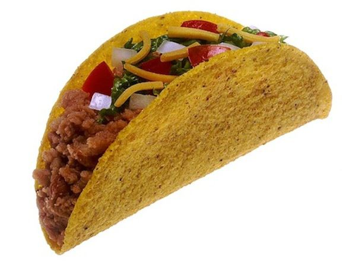

Tacos

Description
Enjoy crispy, homemade hard tacos made from freshly fried corn tortillas seasoned with a sprinkle of salt. This simple recipe delivers perfectly crunchy shells, ready to be filled with your favorite toppings for a delightful taco night.
Ingredients
- 2 Cups vegetable oil for frying
- 1 (12 ounce) package corn torillas
- Salt to taste
Steps
- Gather the ingredients.
- Fill a heavy skillet with 1-inch-deep oil over medium heat; heat to 365 degrees F (180 degrees C).
- Fry one tortilla at a time in hot oil. Cook for about 15 seconds.
- Flip over and fold in half, holding in place with tongs until crispy, about 15 seconds.
- Drain on paper towels. Sprinkle with salt while still hot.